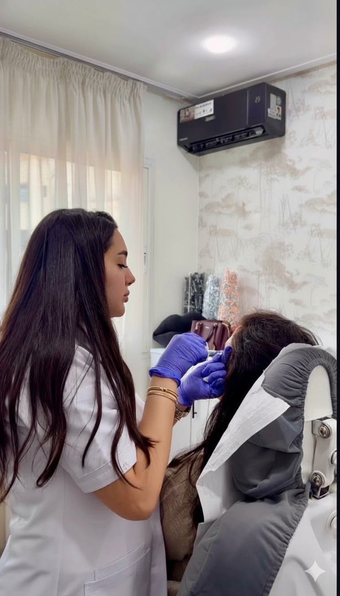

La perte de volume des pommettes est souvent l'un des premiers signes visibles du vieillissement : le visage paraît plus plat, les traits descendent, l'ovale se relâche. Le filler pommettes Casablanca permet de restaurer ce soutien avec une injection d'acide hyaluronique précise, sans chirurgie ni cicatrice. À Casablanca, au cabinet du Quartier des Hôpitaux, Dr Yousra El Khadri recherche un effet liftant immédiat mais naturel, adapté à votre morphologie. Pour replacer ce soin dans l'ensemble des options injectables, vous pouvez consulter notre guide complet sur les injections esthétiques à Casablanca.
Qu'est-ce que le filler des pommettes ?
Le filler des pommettes consiste à injecter un gel d'acide hyaluronique dans la région malaire, c'est-à-dire la zone qui donne du relief au milieu du visage. L'objectif est de restaurer volume pommettes, de recréer un point de soutien et de rehausser subtilement les tissus qui se sont déplacés avec le temps.
Avec l'âge, plusieurs phénomènes se combinent : la fonte graisseuse diminue le galbe, le relâchement cutané déplace les tissus vers le bas, et l'os malaire peut paraître moins projeté. Chez d'autres personnes, les pommettes sont naturellement peu marquées par morphologie. Le traitement ne répond donc pas à une seule indication.
Dans une indication volumique, il corrige des pommettes plates ou un milieu du visage creusé. Dans une indication liftante, il agit comme un soutien mécanique qui aide à redessiner l'ovale. C'est cette double action qui explique l'intérêt du filler pommettes dans une stratégie de rajeunissement sans chirurgie.
Les effets du filler pommettes sur le visage
Restaurer le volume perdu
Lorsque les pommettes se vident, le visage peut prendre un aspect fatigué, même si la peau reste de bonne qualité. L'acide hyaluronique apporte un galbe contrôlé dans le tiers moyen du visage. Il ne s'agit pas de gonfler, mais de corriger une perte de soutien qui rend les joues plus creuses et les sillons plus visibles.
Ce pommettes creuses traitement aide à retrouver une transition plus douce entre la paupière inférieure, la joue et la partie latérale du visage. Si le creux se situe surtout sous l'oeil, un protocole spécifique peut être envisagé en complément, comme le traitement des cernes creux.
Redessiner l'ovale et l'effet liftant
En rehaussant les pommettes, le filler crée un point d'ancrage qui soutient les tissus du bas du visage. Les bajoues peuvent paraître moins présentes, l'ovale mieux dessiné, et le visage plus tonique. Cet effet de lifting sans chirurgie Casablanca reste mécanique et subtil : il améliore le soutien sans remplacer un lifting chirurgical lorsque le relâchement est très avancé.
Un résultat harmonieux et naturel
La réussite d'un filler pommettes dépend de la lecture globale du visage. Dr El Khadri évalue la projection naturelle des pommettes, la forme du menton, la largeur de la mâchoire et l'équilibre entre les deux côtés du visage. Le but n'est jamais d'exagérer le volume, mais de restaurer une harmonie que le temps a progressivement modifiée.
Les fillers utilisés sont sélectionnés selon leur tenue, leur élasticité et la profondeur d'injection souhaitée. Un produit de type Restylane pour les pommettes peut être indiqué dans certains profils, comme d'autres gels d'acide hyaluronique certifiés. Vous pouvez retrouver les laboratoires référencés sur la page partenaires du cabinet.
Déroulement d'une séance au cabinet de Dr Yousra El Khadri à Casablanca
La séance commence par une consultation médicale au cabinet de Dr Yousra El Khadri, à Casablanca, dans le Quartier des Hôpitaux. Dr El Khadri analyse votre visage de face, de profil et en mouvement. Elle précise vos objectifs, recherche les contre-indications et détermine si l'indication est surtout volumique, liftante, ou les deux.
Une crème anesthésiante peut être appliquée avant l'injection. La peau est ensuite désinfectée, puis l'acide hyaluronique est déposé avec précision dans la région malaire, à la profondeur adaptée à votre morphologie. La séance dure en général 20 à 30 minutes. Le résultat est visible immédiatement, avec un rendu final autour de J+15, une fois les légers gonflements résorbés.
Après la séance, Dr El Khadri vous remet des consignes simples : éviter les massages, le sport intense, la chaleur forte et l'exposition solaire directe pendant 24 à 48 heures. La reprise des activités sociales est possible rapidement dans la majorité des cas.
Les photos de la séance
Les images de cet article ont une vocation pédagogique. La photo principale illustre le geste d'injection du filler pommettes par acide hyaluronique, avec une attention particulière à l'angle et à la profondeur du dépôt. La photo ci-dessous montre une séance réelle au cabinet de Dr Yousra El Khadri, au Quartier des Hôpitaux de Casablanca, et témoigne de la précision du protocole pratiqué.

Résultats, durée et entretien
Le résultat attendu est un visage plus soutenu, des pommettes rehaussées et un ovale plus net, sans excès de volume. L'amélioration se voit souvent dès la sortie du cabinet, mais le rendu devient plus stable après quelques jours. Une légère sensibilité, un bleu ou un gonflement localisé peuvent apparaître et disparaissent habituellement rapidement.
La durée moyenne du filler pommettes est de 12 à 18 mois, selon votre métabolisme, votre hygiène de vie, le produit utilisé et le volume injecté. Un entretien peut être proposé pour maintenir progressivement le résultat. L'acide hyaluronique reste réversible : en cas de besoin médical, la hyaluronidase peut dissoudre le produit.
Contre-indications et précautions
Le filler pommettes est un acte médical qui nécessite un interrogatoire préalable. Il est contre-indiqué pendant la grossesse et l'allaitement, en cas de troubles de la coagulation non équilibrés, d'infection cutanée active sur la zone, ou d'antécédent d'allergie à l'acide hyaluronique.
Ces précautions ne sont pas là pour inquiéter, mais pour protéger votre santé et garantir un résultat optimal. Une consultation rigoureuse permet d'adapter la technique, le volume et le choix du produit à votre visage. Pour une vision plus large de l'acide hyaluronique des pommettes au Maroc et des autres zones traitées par filler, la page soin détaille les indications disponibles au cabinet.
Foire aux questions
Prendre rendez-vous au cabinet de Dr Yousra El Khadri
Vous souhaitez savoir si le filler pommettes peut restaurer le volume de votre visage ou améliorer l'ovale sans chirurgie ? Le cabinet de Dr Yousra El Khadri, situé au Quartier des Hôpitaux à Casablanca, vous accueille sur rendez-vous pour une analyse personnalisée.
Lundi au vendredi : 9h à 19h · Samedi : 9h à 14h
Pour aller plus loin
Fillers acide hyaluronique Guide injections Casablanca Traitement des cernes creux Nos partenaires